Tags para tus chats
Arrastrá etiquetas a un chat: Familia, Amigo, Pareja, Trabajo, Cliente, Urgente y Pendiente. Unas son fijas y otras vencen solas, a las 24 h o a los 7 días hábiles sin mensajes.
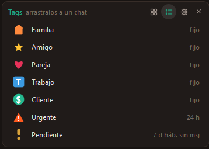
Un cliente de escritorio nativo para Windows con la interfaz de WhatsApp Desktop, más resúmenes con IA, estados y mensajes programados, notas de voz y actualizaciones automáticas. También tiene app Android.
Arrastrá etiquetas a un chat: Familia, Amigo, Pareja, Trabajo, Cliente, Urgente y Pendiente. Unas son fijas y otras vencen solas, a las 24 h o a los 7 días hábiles sin mensajes.

Si un mensaje dice «domingo 16:00», la app lo detecta y te ofrece crear un recordatorio o programar un mensaje.
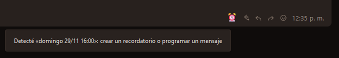
Cada nota de voz muestra su onda, velocidad de reproducción y la transcripción escrita debajo.
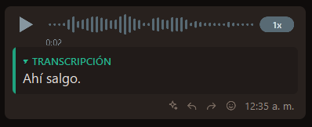
Desde la burbuja de cualquier foto, la IA describe qué hay en la imagen y extrae el texto que contiene, con botones para copiar cada parte. Funciona en PC y Android.
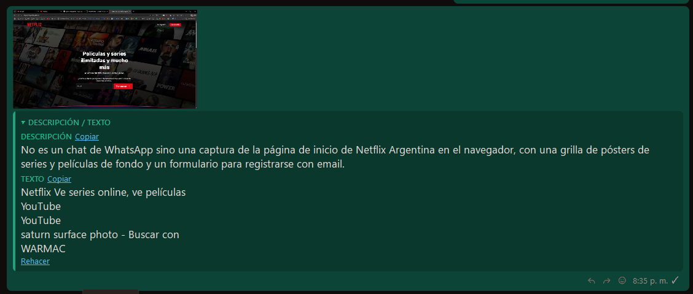
Un botón en cada mensaje lo resume e interpreta: en pocas palabras, qué quiere decir y qué espera. También funciona con la transcripción de las notas de voz.
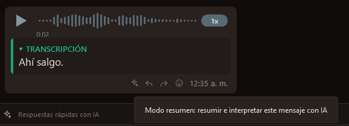
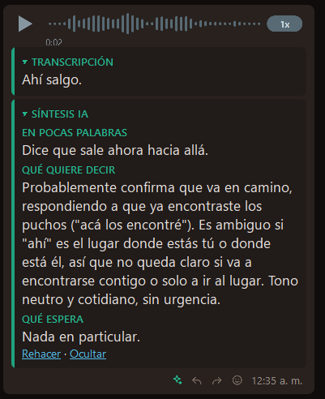
Elegí el enfoque, la longitud, cuántos mensajes leer y qué querés saber de la conversación. La IA y el modelo los elegís vos, queda guardado el historial y podés sumar tus propias notas como contexto. También hay un análisis interno sobre vos.
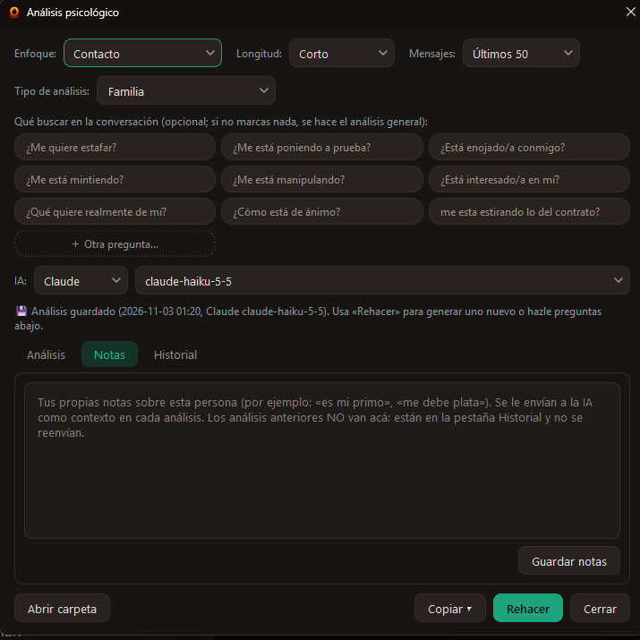
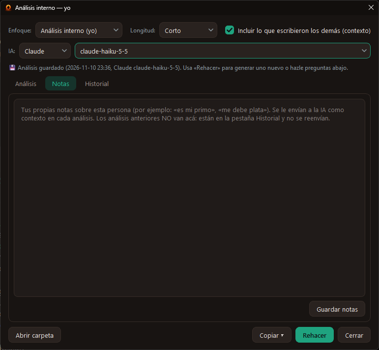
Textos con color de fondo, o fotos y videos, con día y hora. Varias fotos a la vez se reparten a intervalos fijos, ideal para dejar un fin de semana cargado.
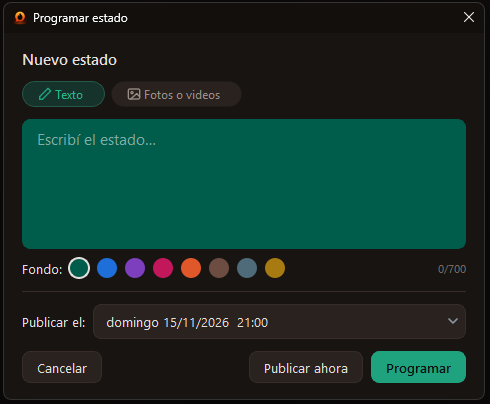
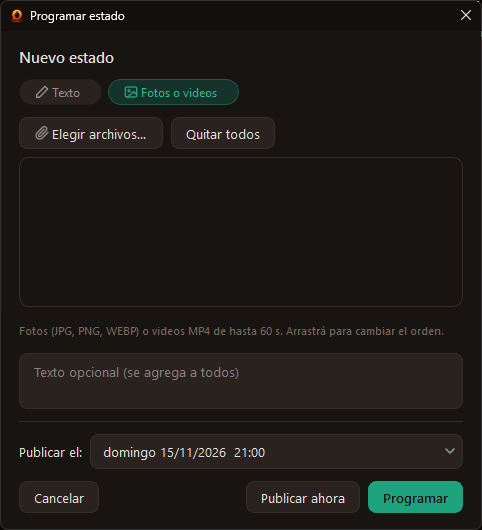
Escribí tu respuesta como te salga y la app la ordena y la explica mejor, o te sugiere una respuesta usando el análisis y las notas del contacto.
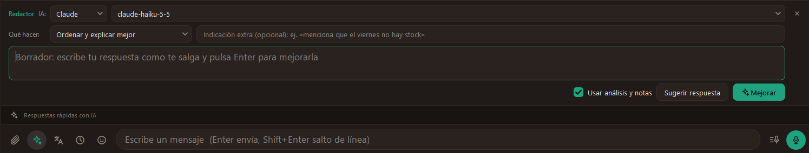
Elegí día y hora y lo próximo que mandes sale solo.
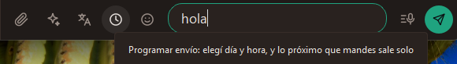
Una app de escritorio en Python 3 con PySide6 (Qt) habla con un gateway liviano en Node.js que usa Baileys para conectarse a WhatsApp. Android tiene su propia app con el mismo ritmo de versiones.